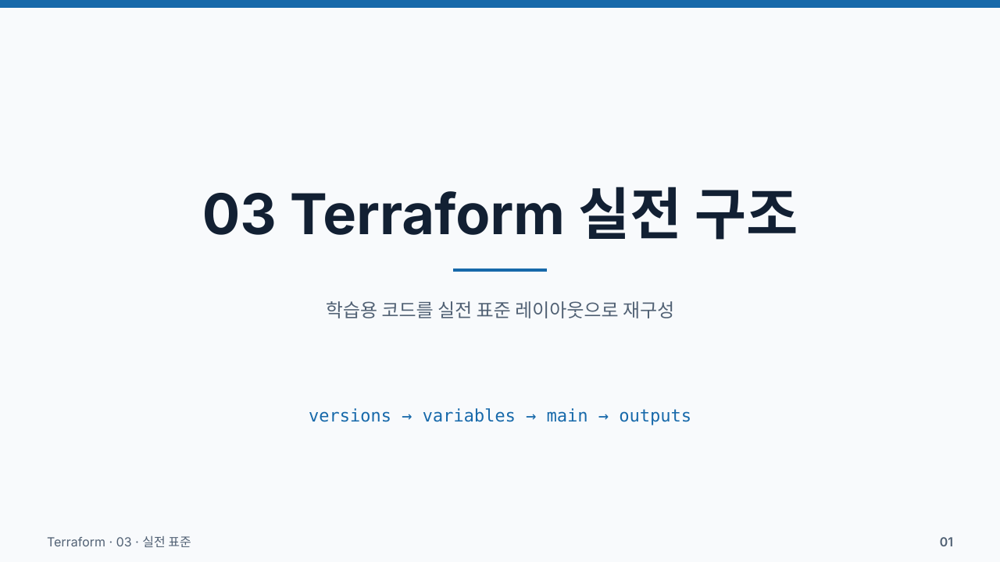
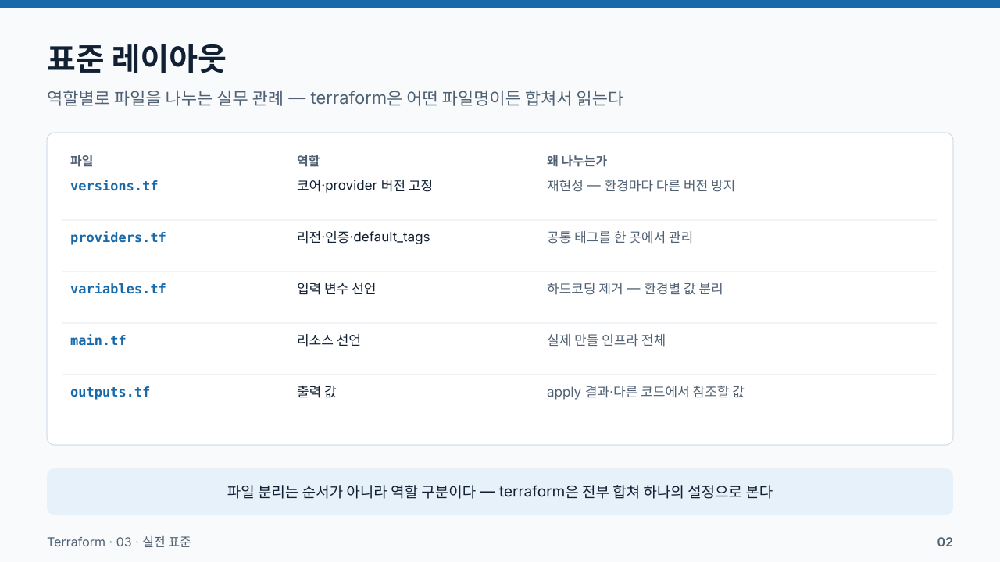
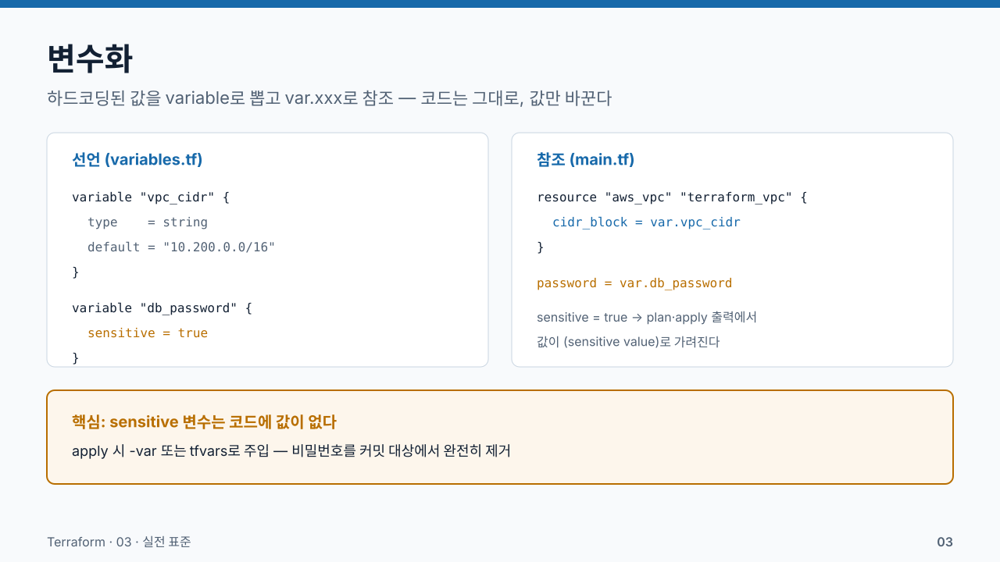
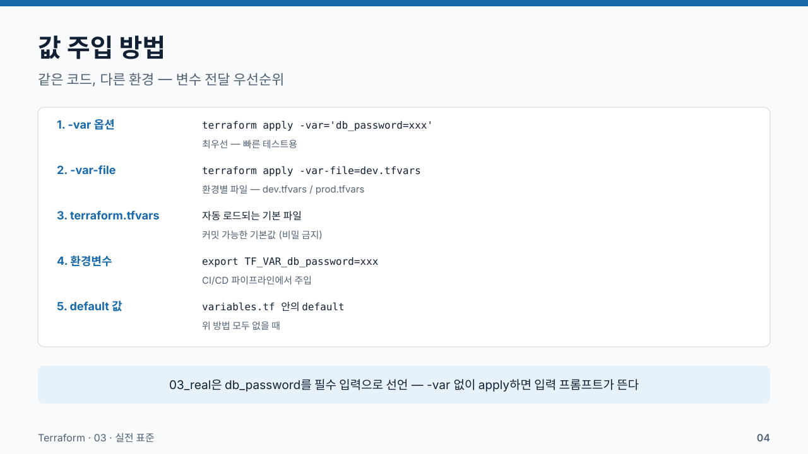
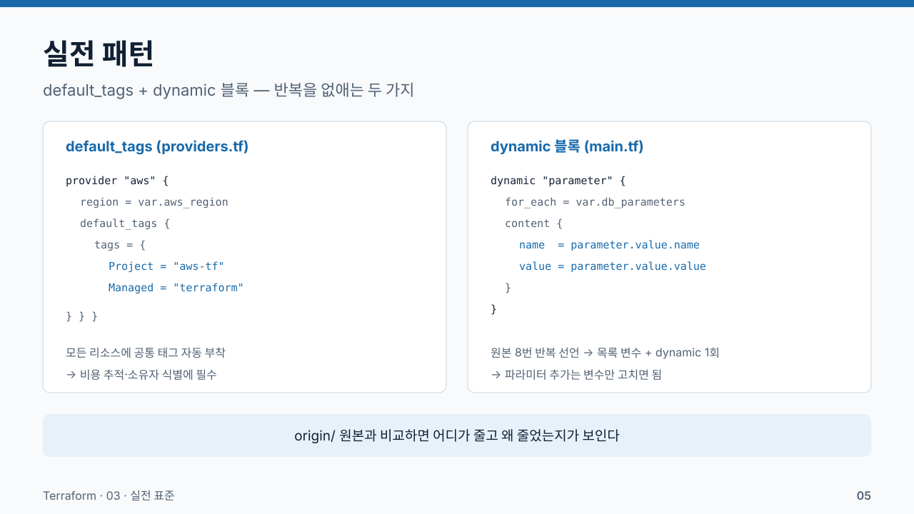
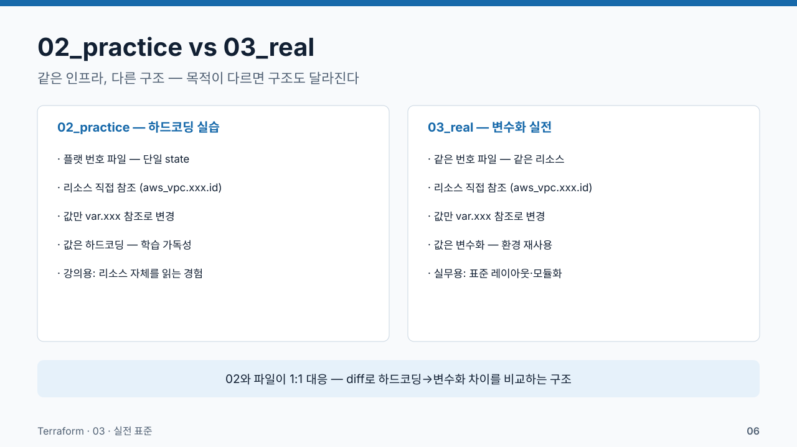
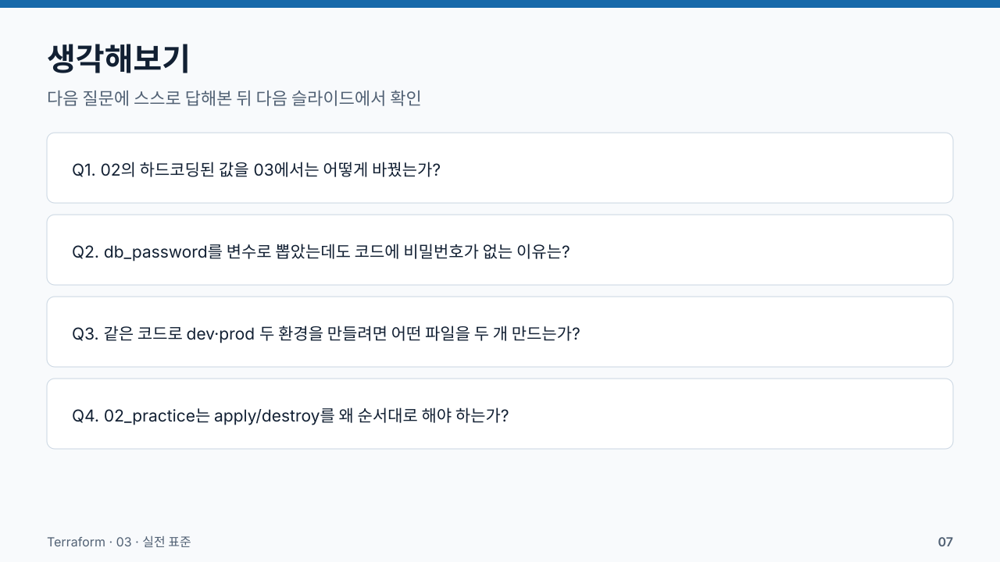
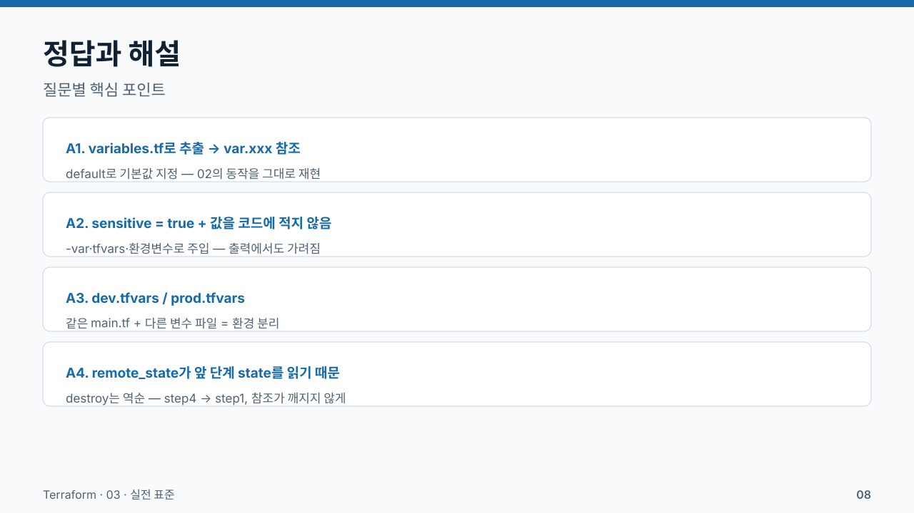

02_practice는 state 분리(계층별 수명주기)를 배우는 구조였다면, 03_real은 하나의 state 안에서 코드를 정리하는 방식입니다. 같은 리소스를 만들지만 값은 변수로, 태그는 default_tags로, 반복 파라미터는 dynamic 블록으로 표준화했습니다. 실무는 둘을 조합합니다 — 계층별 state 분리 + 각 계층 내부는 변수·모듈화.
var.xxx로 참조할 수 있다dynamic 블록으로 반복되는 설정을 줄일 수 있다sensitive 변수와 default_tags 같은 실전 패턴을 안다default_tags와 리소스별 tags 관계를 안다sensitive 변수와 필수 입력 변수를 구분할 수 있다dynamic 블록이 반복을 줄이는 원리를 안다| 파일 | 역할·내용 |
|---|---|
versions.tf | terraform/provider 버전 고정 |
providers.tf | provider "aws" 블록 — 리전·default_tags |
variables.tf | 변수 정의 — region·project_name 등 |
main.tf | 리소스 선언 — 변수 참조 버전 |
outputs.tf | 출력 정의 |
origin | 03 단계 원본 파일 보관 (비교용) |
단계 간 연결: 02의 원본 파일들이 `origin/`에 보존되어 있습니다. `diff -u origin/02_vpc.tf main.tf` 같은 비교로 변수화 과정을 학습할 수 있습니다.








아래 명령은 터미널에서 프로젝트 루트(aws-tf/) 기준으로 실행합니다.
복사 버튼으로 명령을 가져간 뒤 터미널에 붙여넣기 (⌘V) 하세요.
terraform initorigin/ 원본과 main.tf를 비교 — 하드코딩 → var.xxx 변경점 찾기variables.tf의 default를 바꿔 plan 차이 확인-var / -var-file로 같은 코드로 다른 환경 만들기dynamic 블록과 원본 반복 선언 비교terraform plan -var-file="dev.tfvars" # 환경별 tfvars 파일 사용03_real/
├── readme.md
├── versions.tf # terraform >= 1.6, aws ~> 5.0
├── providers.tf # provider "aws" (var.aws_region) + default_tags
├── variables.tf # 입력 변수 — 리전·CIDR·EC2·RDS 전체
├── main.tf # 리소스 선언 — 02와 동일 리소스, 변수 참조
├── slides/ # 이론 슬라이드 8장 (s01~s08)
├── outputs.tf # vpc_id·서브넷·배스천 IP·RDS 엔드포인트
└── origin/ # 02 원본 .tf 9개 — 비교용 보관03_real/
├── readme.md
├── versions.tf # terraform >= 1.6, aws ~> 5.0
├── providers.tf # provider "aws" (var.aws_region) + default_tags
├── variables.tf # 입력 변수 — 리전·CIDR·EC2·RDS 전체
├── main.tf # 리소스 선언 — 02와 동일 리소스, 변수 참조
├── slides/ # 이론 슬라이드 8장 (s01~s08)
├── outputs.tf # vpc_id·서브넷·배스천 IP·RDS 엔드포인트
└── origin/ # 02 원본 .tf 9개 — 비교용 보관| 경로 | 역할 |
|---|---|
versions.tf | 버전 제약 — 재현성 |
providers.tf | 리전 + default_tags로 모든 리소스에 공통 태그 |
variables.tf | db_password는 sensitive + 기본값 없음 (필수 입력) |
main.tf | 리소스 이름은 02와 동일 — state 대조 가능 |
origin/ | 리팩터링 전 원본 — diff 비교용 |
| 파일 | 리소스 / 데이터 소스 |
|---|---|
main.tf | aws_vpc.terraform_vpc |
outputs.tf | (선언 없음) |
providers.tf | (선언 없음) |
variables.tf | (선언 없음) |
versions.tf | (선언 없음) |
origin/01_provider.tf | (선언 없음) |
origin/02_vpc.tf | aws_vpc.terraform_vpc |
origin/03-subnet.tf | (선언 없음) |
origin/04-igw.tf | (선언 없음) |
origin/05-ngw.tf | (선언 없음) |
origin/06-routing-table.tf | (선언 없음) |
origin/09-rds.tf | (선언 없음) |
※ 브라우저에서는 실행할 수 없습니다 — 명령을 복사해 터미널에 붙여넣으세요.
상단 내비게이션을 클릭하면 해당 패널이 표시됩니다. 주소창 해시(#tab-slides 등)로 특정 탭에 바로 이동할 수 있습니다.
‹ › 버튼 또는 ← → 키로 이동합니다ESC · ✕ 닫기 · 어두운 배경 클릭으로 닫습니다| 키 | 동작 |
|---|---|
← → | 뷰어에서 이전/다음 슬라이드 |
ESC | 뷰어 닫기 |
index.html을 브라우저로 바로 열면 됩니다# ============================================================
# main.tf — 02_practice 내용을 변수화해 단일 state로 관리
# VPC → 서브넷 → IGW/NGW → 라우팅 → SG → EC2 → RDS
# ============================================================
# ---------------- VPC ----------------
resource "aws_vpc" "terraform_vpc" {
cidr_block = var.vpc_cidr
enable_dns_support = true
enable_dns_hostnames = true
tags = {
Name = "${var.project_name}-vpc"
}
}
# ---------------- 서브넷 ----------------
resource "aws_subnet" "terraform_pub_subnet_2a" {
vpc_id = aws_vpc.terraform_vpc.id
cidr_block = var.pub_subnet_cidrs[0]
availability_zone = var.azs[0]
map_public_ip_on_launch = true
tags = {
Name = "${var.project_name}-pub-subnet-2a"
"kubernetes.io/role/elb" = "1"
"kubernetes.io/cluster/terraform-eks-cluster" = "shared"
}
}
resource "aws_subnet" "terraform_pub_subnet_2c" {
vpc_id = aws_vpc.terraform_vpc.id
cidr_block = var.pub_subnet_cidrs[1]
availability_zone = var.azs[1]
map_public_ip_on_launch = true
tags = {
Name = "${var.project_name}-pub-subnet-2c"
"kubernetes.io/role/elb" = "1"
"kubernetes.io/cluster/terraform-eks-cluster" = "shared"
}
}
resource "aws_subnet" "terraform_pri_subnet_2a" {
vpc_id = aws_vpc.terraform_vpc.id
cidr_block = var.pri_subnet_cidrs[0]
availability_zone = var.azs[0]
tags = {
Name = "${var.project_name}-pri-subnet-2a"
"kubernetes.io/role/internal-elb" = "1"
"kubernetes.io/cluster/terraform-eks-cluster" = "shared"
}
}
resource "aws_subnet" "terraform_pri_subnet_2c" {
vpc_id = aws_vpc.terraform_vpc.id
cidr_block = var.pri_subnet_cidrs[1]
availability_zone = var.azs[1]
tags = {
Name = "${var.project_name}-pri-subnet-2c"
"kubernetes.io/role/internal-elb" = "1"
"kubernetes.io/cluster/terraform-eks-cluster" = "shared"
}
}
# ---------------- 게이트웨이 ----------------
resource "aws_internet_gateway" "terraform_igw" {
vpc_id = aws_vpc.terraform_vpc.id
tags = {
Name = "${var.project_name}-igw"
}
}
resource "aws_eip" "terraform_eip" {
domain = "vpc"
}
resource "aws_nat_gateway" "terraform_ngw" {
allocation_id = aws_eip.terraform_eip.id
subnet_id = aws_subnet.terraform_pub_subnet_2a.id
tags = {
Name = "${var.project_name}-ngw"
}
}
# ---------------- 라우팅 ----------------
resource "aws_route_table" "terraform_pub_rt" {
vpc_id = aws_vpc.terraform_vpc.id
tags = {
Name = "${var.project_name}-pub-rt"
}
}
resource "aws_route_table" "terraform_pri_rt" {
vpc_id = aws_vpc.terraform_vpc.id
tags = {
Name = "${var.project_name}-pri-rt"
}
}
resource "aws_route" "terraform_pub_rt" {
route_table_id = aws_route_table.terraform_pub_rt.id
destination_cidr_block = "0.0.0.0/0"
gateway_id = aws_internet_gateway.terraform_igw.id
}
resource "aws_route" "terraform_pri_rt" {
route_table_id = aws_route_table.terraform_pri_rt.id
destination_cidr_block = "0.0.0.0/0"
nat_gateway_id = aws_nat_gateway.terraform_ngw.id
}
resource "aws_route_table_association" "terraform_pub_rt_associate_2a" {
subnet_id = aws_subnet.terraform_pub_subnet_2a.id
route_table_id = aws_route_table.terraform_pub_rt.id
}
resource "aws_route_table_association" "terraform_pub_rt_associate_2c" {
subnet_id = aws_subnet.terraform_pub_subnet_2c.id
route_table_id = aws_route_table.terraform_pub_rt.id
}
resource "aws_route_table_association" "terraform_pri_rt_associate_2a" {
subnet_id = aws_subnet.terraform_pri_subnet_2a.id
route_table_id = aws_route_table.terraform_pri_rt.id
}
resource "aws_route_table_association" "terraform_pri_rt_associate_2c" {
subnet_id = aws_subnet.terraform_pri_subnet_2c.id
route_table_id = aws_route_table.terraform_pri_rt.id
}
# ---------------- 보안 그룹 ----------------
# Bastion SG — 실습용 전체 개방 (운영에서는 CIDR 축소 권장)
resource "aws_security_group" "terraform_sg_bastion" {
name = "${var.project_name}-sg-bastion"
description = "for Bastion Server"
vpc_id = aws_vpc.terraform_vpc.id
tags = {
Name = "${var.project_name}-sg-bastion"
}
ingress {
from_port = -1
to_port = -1
protocol = "icmp"
cidr_blocks = ["0.0.0.0/0"]
description = "for ping"
}
ingress {
from_port = 22
to_port = 22
protocol = "tcp"
cidr_blocks = ["0.0.0.0/0"]
description = "for SSH"
}
ingress {
from_port = 80
to_port = 80
protocol = "tcp"
cidr_blocks = ["0.0.0.0/0"]
description = "for HTTP"
}
ingress {
from_port = 443
to_port = 443
protocol = "tcp"
cidr_blocks = ["0.0.0.0/0"]
description = "for HTTPS"
}
ingress {
from_port = 3306
to_port = 3306
protocol = "tcp"
cidr_blocks = ["0.0.0.0/0"]
description = "for DB"
}
egress {
from_port = 0
to_port = 0
protocol = "-1"
cidr_blocks = ["0.0.0.0/0"]
}
}
# RDS SG — 배스천 SG를 가진 인스턴스에서만 3306 허용
resource "aws_security_group" "terraform_sg_rds" {
name = "${var.project_name}-sg-rds"
description = "for RDS MariaDB"
vpc_id = aws_vpc.terraform_vpc.id
tags = {
Name = "${var.project_name}-sg-rds"
}
ingress {
from_port = 3306
to_port = 3306
protocol = "tcp"
security_groups = [aws_security_group.terraform_sg_bastion.id]
description = "MariaDB from bastion"
}
egress {
from_port = 0
to_port = 0
protocol = "-1"
cidr_blocks = ["0.0.0.0/0"]
}
}
# ---------------- EC2 (배스천) ----------------
resource "aws_instance" "terraform_pub_ec2_bastion_2a" {
ami = var.ec2_ami
instance_type = var.ec2_instance_type
vpc_security_group_ids = [aws_security_group.terraform_sg_bastion.id]
subnet_id = aws_subnet.terraform_pub_subnet_2a.id
key_name = var.key_name
associate_public_ip_address = true
root_block_device {
volume_size = "8"
volume_type = "gp2"
tags = {
Name = "${var.project_name}-pub-ec2-bastion-2a"
}
}
tags = {
Name = "${var.project_name}-pub-ec2-bastion-2a"
}
}
# ---------------- RDS ----------------
resource "aws_db_subnet_group" "terraform_rds_subnet_group" {
name = "${var.project_name}-rds-subnet-group"
subnet_ids = [aws_subnet.terraform_pri_subnet_2a.id, aws_subnet.terraform_pri_subnet_2c.id]
tags = {
Name = "${var.project_name}-rds-subnet-group"
}
}
resource "aws_db_parameter_group" "terraform_mariadb_parameter_group" {
name = "${var.project_name}-mariadb-parameter-group"
family = "mariadb10.11"
description = "Custom parameter group for MariaDB"
parameter {
name = "max_connections"
value = "150"
}
parameter {
name = "time_zone"
value = "Asia/Seoul"
}
dynamic "parameter" {
for_each = ["character_set_client", "character_set_connection", "character_set_database",
"character_set_filesystem", "character_set_results", "character_set_server"]
content {
name = parameter.value
value = "utf8mb4"
}
}
dynamic "parameter" {
for_each = ["collation_connection", "collation_server"]
content {
name = parameter.value
value = "utf8mb4_unicode_ci"
}
}
parameter {
name = "binlog_format"
value = "ROW"
}
}
resource "aws_db_instance" "terraform_mariadb_rds" {
identifier_prefix = "${var.project_name}-mariadb-rds"
allocated_storage = 10
engine = var.db_engine
engine_version = var.db_engine_version
instance_class = var.db_instance_class
db_name = var.db_name
username = var.db_username
password = var.db_password
parameter_group_name = aws_db_parameter_group.terraform_mariadb_parameter_group.name
skip_final_snapshot = true
db_subnet_group_name = aws_db_subnet_group.terraform_rds_subnet_group.name
vpc_security_group_ids = [aws_security_group.terraform_sg_rds.id]
tags = {
Name = "${var.project_name}-mariadb-rds"
}
}
# ============================================================
# outputs.tf — apply 후 확인할 값
# ============================================================
output "vpc_id" {
description = "생성된 VPC ID"
value = aws_vpc.terraform_vpc.id
}
output "pub_subnet_ids" {
description = "퍼블릭 서브넷 ID 목록"
value = [aws_subnet.terraform_pub_subnet_2a.id, aws_subnet.terraform_pub_subnet_2c.id]
}
output "pri_subnet_ids" {
description = "프라이빗 서브넷 ID 목록"
value = [aws_subnet.terraform_pri_subnet_2a.id, aws_subnet.terraform_pri_subnet_2c.id]
}
output "bastion_public_ip" {
description = "배스천 EC2 공인 IP — ssh -i <pem> ec2-user@<이 IP>"
value = aws_instance.terraform_pub_ec2_bastion_2a.public_ip
}
output "rds_endpoint" {
description = "MariaDB 접속 엔드포인트"
value = aws_db_instance.terraform_mariadb_rds.endpoint
}
provider "aws" {
region = var.aws_region # Asia Pacific (Seoul)
default_tags {
tags = {
Project = var.project_name
Managed = "terraform"
}
}
}
# ============================================================
# variables.tf — 입력 변수
# 02_practice에 하드코딩되어 있던 값들을 변수로 추출
# ============================================================
variable "aws_region" {
description = "리소스를 생성할 AWS 리전"
type = string
default = "ap-northeast-2"
}
variable "project_name" {
description = "태그와 리소스 이름에 쓸 프로젝트명"
type = string
default = "terraform"
}
# ---------------- 네트워크 ----------------
variable "vpc_cidr" {
description = "VPC 전체 IP 대역"
type = string
default = "10.200.0.0/16"
}
variable "azs" {
description = "사용할 가용영역 2개"
type = list(string)
default = ["ap-northeast-2a", "ap-northeast-2c"]
}
variable "pub_subnet_cidrs" {
description = "퍼블릭 서브넷 CIDR (azs와 순서 대응)"
type = list(string)
default = ["10.200.1.0/24", "10.200.2.0/24"]
}
variable "pri_subnet_cidrs" {
description = "프라이빗 서브넷 CIDR (azs와 순서 대응)"
type = list(string)
default = ["10.200.11.0/24", "10.200.12.0/24"]
}
# ---------------- EC2 ----------------
variable "ec2_ami" {
description = "배스천 EC2 AMI ID — 리전별로 다름"
type = string
default = "ami-056a29f2eddc40520"
}
variable "ec2_instance_type" {
description = "배스천 인스턴스 사양"
type = string
default = "t2.micro"
}
variable "key_name" {
description = "EC2 SSH 키페어 이름 — AWS 콘솔에 미리 생성된 것"
type = string
default = "ja-01-v2"
}
# ---------------- RDS ----------------
variable "db_engine" {
description = "RDS 엔진"
type = string
default = "mariadb"
}
variable "db_engine_version" {
description = "엔진 버전 — 리전에서 지원하는 버전이어야 함"
type = string
default = "10.11.13"
}
variable "db_instance_class" {
description = "RDS 인스턴스 사양"
type = string
default = "db.t3.micro"
}
variable "db_name" {
description = "초기 데이터베이스명 (영문·숫자·_ 만 가능)"
type = string
default = "terraform_mariadb_rds"
}
variable "db_username" {
description = "마스터 사용자명"
type = string
default = "root"
}
variable "db_password" {
description = "마스터 비밀번호 — 실습용 평문. 운영에서는 tfvars·Secrets Manager 사용"
type = string
sensitive = true
}
terraform {
required_version = ">= 1.6"
required_providers {
aws = {
source = "hashicorp/aws"
version = "~> 5.0"
}
}
}
terraform {
required_version = ">= 1.0.0, <2.0.0"
required_providers {
aws = {
source = "hashicorp/aws"
version = "~> 5.0"
}
}
}
provider "aws" {
region = "ap-northeast-2" # Asia Pacific (Seoul)
}resource "aws_vpc" "terraform_vpc" {
cidr_block = "10.200.0.0/16"
enable_dns_support = true
enable_dns_hostnames = true
tags = {
"Name" = "terraform-vpc"
}
}